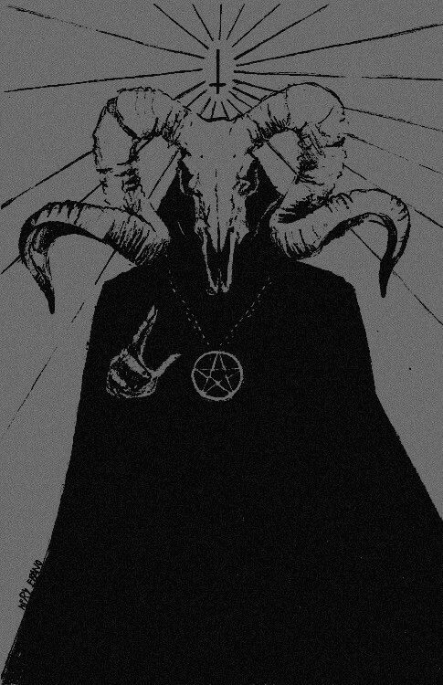

Void Space
Empty, but never truly empty.
Void Observation
Tujuan
Mengungkap jejak tersembunyi yang tak kasat mata
Waktu
Jam Sapi
Void Space
Visi
“Menjadi entitas yang mampu membaca kehampaan, mengungkap apa yang tersembunyi di balik ketiadaan, serta membangun kesadaran bahwa ruang kosong bukanlah akhir—melainkan awal dari ancaman yang tak terlihat.”
Misi
Menjelajahi ruang digital yang sunyi untuk mengidentifikasi jejak-jejak yang sengaja disembunyikan Mengembangkan sistem pertahanan yang mampu merespons ancaman dari sumber yang tidak terdeteksi Mengungkap pola dalam kekosongan data yang tampak normal namun menyimpan anomali Membangun kesadaran akan keberadaan ancaman yang bergerak tanpa bentuk dan tanpa suara Menciptakan mekanisme adaptif yang tetap siaga bahkan ketika sistem tampak “aman”
Entitas

Hai,
“Melihat yang tak terlihat. Memahami yang tersembunyi.”